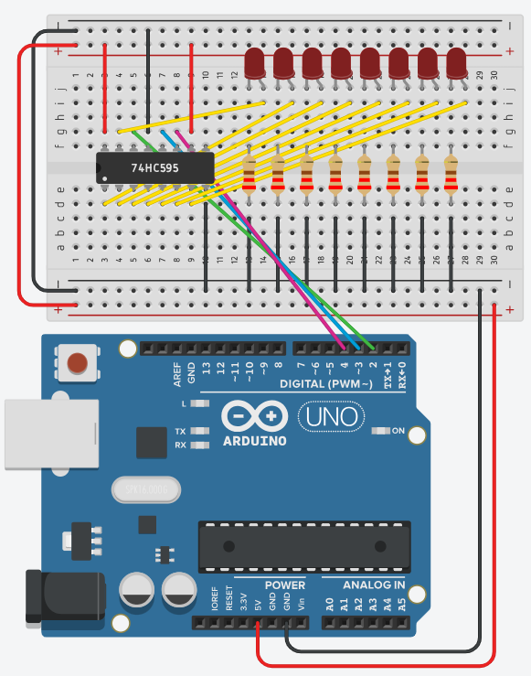
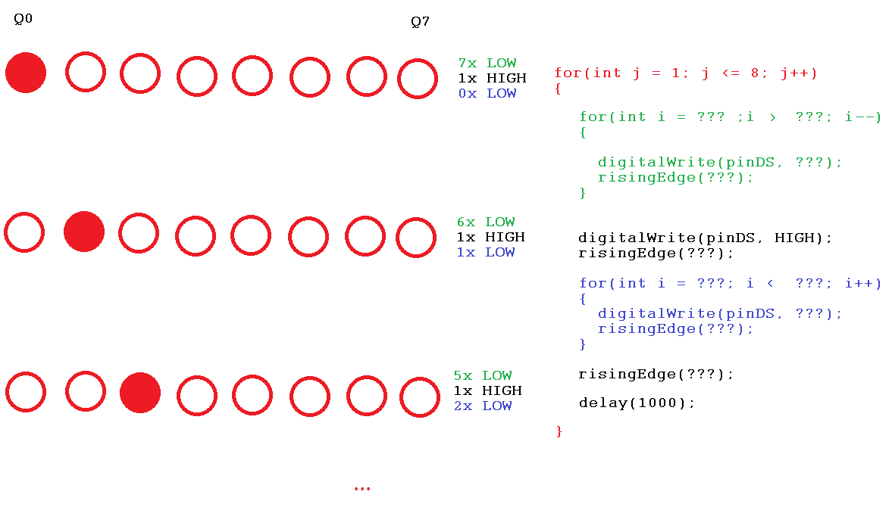

Maak een schakeling waarbij met een schuifregister een 8-bit looplicht gemaakt wordt. Je zet eerst een korte versie in elkaar en vervangt die daarna door een lus.

Actief hoog. De uitgangen van het schuifregister sourcen de stroom, dus een led licht op bij een 1 op de bijhorende uitgang.
Het schuifregister hangt aan dezelfde drie pinnen als in de vorige oefeningen: DS op pin 2, STCP op pin 3 en SHCP op pin 4. Alleen wat er aan de uitgangen hangt verandert: acht leds in plaats van een 7 segment display. De risingEdge()-functie en de regel dat de laatst ingeschoven bit op Q0 belandt, kan je nalezen op Werking van het schuifregister.
Begin met een mini versie van het looplicht waarbij je drie leds afwisselend laat branden. Schrijf het dus eerst gewoon uit als een sequentie, zonder lus. Zo zie je precies welke stappen je telkens herhaalt.
Breid nu jouw mini versie uit en probeer te werken met een lus om alle leds aan te sturen.
Als je een sequentie (opeenvolging van instructies) wil omzetten naar een iteratie (lus) dan moet je eerst kijken naar:
Probeer dit eens zelf uit. Als je niet tot de oplossing komt kan je de hint bekijken.

Per stap schuif je altijd precies 8 bits naar buiten: eerst een aantal nullen, dan één enkele 1, dan de resterende nullen. Alleen de verdeling tussen die twee groepen nullen verschuift telkens één plaats.
Sla je oefening op.
Overloop volgende checklist om je oefening zelf te evalueren:
De buitenste lus telt af welke led aan de beurt is. De twee binnenste lussen schuiven de nullen naar buiten: eerst die vóór de brandende led, dan die erna. Samen zijn dat altijd 7 nullen en 1 één, dus precies 8 bits.
Omdat de laatst verschoven bit op Q0 belandt, staat de eerste binnenlus voor de hoge uitgangen (Q7 naar beneden) en de tweede voor de lage. Op het einde van elke stap één stijgende flank op STCP, en dan pas de delay().
const int pinDS = 2; // Data ingang
const int pinSTCP = 3; // 0 naar 1 = schuifregister naar storage register
const int pinSHCP = 4; // 0 naar 1 = seriële ingang naar schuifregister
const int aantalLeds = 8;
void setup()
{
pinMode(pinDS, OUTPUT);
pinMode(pinSTCP, OUTPUT);
pinMode(pinSHCP, OUTPUT);
}
void risingEdge(int pinNummer)
{
digitalWrite(pinNummer, LOW);
digitalWrite(pinNummer, HIGH);
}
void schuifBit(bool waarde)
{
digitalWrite(pinDS, waarde ? HIGH : LOW);
risingEdge(pinSHCP);
}
void loop()
{
for (int j = 1; j <= aantalLeds; j++)
{
// De nullen boven de brandende LED
for (int i = aantalLeds; i > j; i--)
{
schuifBit(false);
}
// De brandende LED zelf
schuifBit(true);
// En de nullen eronder
for (int i = 1; i < j; i++)
{
schuifBit(false);
}
risingEdge(pinSTCP); // alle 8 LEDs tegelijk bijwerken
delay(1000);
}
}